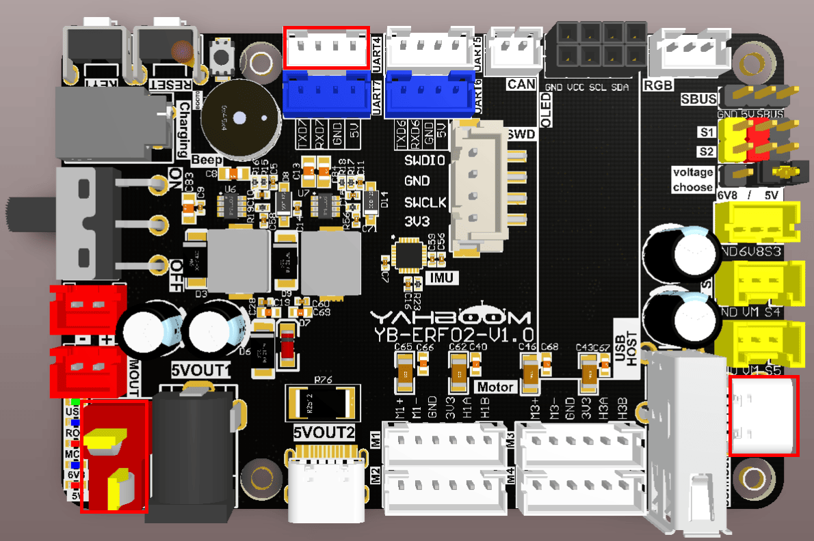
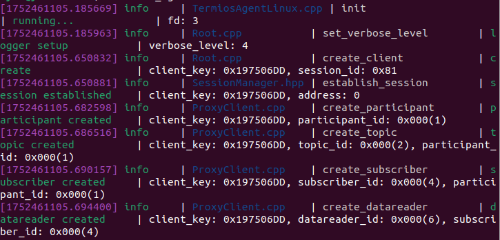

Доступ к данным во Flash-памяти
- Цель эксперимента
- Подключение оборудования
- Анализ основного кода
- Компиляция, загрузка и прошивка firmware
- Результаты эксперимента
1. Цель эксперимента
Используя функцию Flash-памяти платы управления STM32, изучить функцию сохранения данных при отключении питания.
2. Подключение оборудования
Плата управления STM32 построена на чипе STM32H743 и имеет 2 МБ Flash-памяти. Помимо выполнения программ, часть этого пространства можно выделить как область пользовательских данных для сохранения информации.
Необходимо подключить USB-C кабель между компьютером и портом USB Connect на плате управления STM32. Кнопка KEY1 используется для изменения данных в FLASH.

3. Анализ основного кода
Путь к исходному коду программы:
Board_Samples/STM32_Samples/Flash
В соответствии с разбиением Flash-памяти чипа STM32H743, она разделена на несколько секторов.
#define STM32_FLASH_BASE 0x08000000 //STM32 FLASH starting address
#define STM32_FLASH_END 0x081FFFFF //STM32 FLASH end address
//The starting address of the FLASH sector, divided into 2 banks, each bank 1MB
#define BANK1_FLASH_SECTOR_0 ((uint32_t)0x08000000) //Bank1 sector 0 starting
address, 128 Kbytes
#define BANK1_FLASH_SECTOR_1 ((uint32_t)0x08020000) //Bank1 sector 1 starting
address, 128 Kbytes
#define BANK1_FLASH_SECTOR_2 ((uint32_t)0x08040000) //Bank1 sector 2 starting
address, 128 Kbytes
#define BANK1_FLASH_SECTOR_3 ((uint32_t)0x08060000) //Bank1 sector 3 starting
address, 128 Kbytes
#define BANK1_FLASH_SECTOR_4 ((uint32_t)0x08080000) //Bank1 sector 4 starting
address, 128 Kbytes
#define BANK1_FLASH_SECTOR_5 ((uint32_t)0x080A0000) //Bank1 sector 5 starting
address, 128 Kbytes
#define BANK1_FLASH_SECTOR_6 ((uint32_t)0x080C0000) //Bank1 sector 6 starting
address, 128 Kbytes
#define BANK1_FLASH_SECTOR_7 ((uint32_t)0x080E0000) //Bank1 sector 7 starting
address, 128 Kbytes
#define BANK2_FLASH_SECTOR_0 ((uint32_t)0x08100000) //Bank2 sector 0 starting
address, 128 Kbytes
#define BANK2_FLASH_SECTOR_1 ((uint32_t)0x08120000) //Bank2 sector 1 starting
address, 128 Kbytes
#define BANK2_FLASH_SECTOR_2 ((uint32_t)0x08140000) //Bank2 sector 2 starting
address, 128 Kbytes
#define BANK2_FLASH_SECTOR_3 ((uint32_t)0x08160000) //Bank2 sector 3 starting
address, 128 Kbytes
#define BANK2_FLASH_SECTOR_4 ((uint32_t)0x08180000) //Bank2 sector 4 starting
address, 128 Kbytes
#define BANK2_FLASH_SECTOR_5 ((uint32_t)0x081A0000) //Bank2 sector 5 starting
address, 128 Kbytes
#define BANK2_FLASH_SECTOR_6 ((uint32_t)0x081C0000) //Bank2 sector 6 starting
address, 128 Kbytes
#define BANK2_FLASH_SECTOR_7 ((uint32_t)0x081E0000) //Bank2 sector 7 starting
address, 128 Kbytes
Чтение данных из FLASH выполняется относительно просто. Достаточно прочитать данные по нужному адресу FLASH. За один раз можно прочитать четыре байта данных.
// Read a word (four bytes) from flash
uint32_t Flash_Read_Word(uint32_t addr)
{
return *(__IO uint32_t *)addr;
}
Для удобства чтения создана новая функция Flash_Read, которая читает несколько байт данных. Здесь addr — адрес во FLASH, output — указатель на считываемые байтовые данные, а len — их длина.
void Flash_Read(uint32_t addr, uint32_t *output, uint32_t len)
{
uint32_t i;
for (i = 0; i < len; i++)
{
output[i] = Flash_Read_Word(addr); // Read 4 bytes.
addr += 4; // offset 4 bytes.
}
}
Запись данных устроена значительно сложнее. Перед каждой записью данных необходимо снять блокировку FLASH и записывать данные группами по 32 байта. После завершения записи FLASH нужно снова заблокировать.
int Flash_Write(uint32_t addr, uint32_t *data, uint32_t len)
{
FLASH_EraseInitTypeDef FlashEraseInit;
uint32_t SectorError = 0;
uint32_t addr_start = 0;
uint32_t addr_end = 0;
if (addr < STM32_FLASH_BASE || addr > STM32_FLASH_END || addr % 4)
{
#if ENABLE_FLASH_DEBUG
printf("Flash address invalid\n");
#endif
return HAL_ERROR;
}
HAL_FLASH_Unlock(); // Unlock
addr_start = addr; // starting address to be written
addr_end = addr + len * 4; // End address of writing
#if ENABLE_FLASH_DEBUG
printf("addr_start:0x%lx, 0x%lx\n", addr_start, addr_end);
#endif
while (addr_start < addr_end)
{
// Determine whether the sector needs to be erased
if (Flash_Read_Word(addr_start) != 0XFFFFFFFF)
{
FlashEraseInit.TypeErase = FLASH_TYPEERASE_SECTORS; // Erase type
FlashEraseInit.Sector = Flash_Get_Sector(addr_start); // Sector to be
erased
FlashEraseInit.Banks = addr_start >= BANK2_FLASH_SECTOR_0 ?
FLASH_BANK_2 : FLASH_BANK_1; // Operation BANK
FlashEraseInit.NbSectors = 1; // Erase only one sector at a time
FlashEraseInit.VoltageRange = FLASH_VOLTAGE_RANGE_3; // voltage
range
if (HAL_FLASHEx_Erase(&FlashEraseInit, &SectorError) != HAL_OK)
{
#if ENABLE_FLASH_DEBUG
printf("Flash erase error\n");
#endif
HAL_FLASH_Lock(); // Erase exception, return failure code after
locking
return HAL_ERROR;
}
}
else
addr_start += 4;
}
printf("flash start write data\n");
while (addr < addr_end) // write data
{
if (Flash_Write_8Word(addr, data))
{
#if ENABLE_FLASH_DEBUG
printf("Flash write8 error\n");
#endif
HAL_FLASH_Lock(); // Write exception, return failure code after
locking
return HAL_ERROR;
}
addr += 32;
data += 8;
}
HAL_FLASH_Lock(); // Lock
return HAL_OK;
}
Запись 32 байт данных по адресу FLASH.
uint8_t Flash_Write_8Word(uint32_t addr, uint32_t *data)
{
uint8_t nword = 8; // Write 8 words each time, 256 bits
uint8_t res;
uint8_t bankx = 0;
if (addr < BANK2_FLASH_SECTOR_0)
bankx = 0; // Determine whether the address is in bank0 or bank1
else
bankx = 1;
res = Flash_Wait_Done(bankx, 0XFF);
if (res == 0) // OK
{
if (bankx == 0) // BANK1 programming
{
FLASH->CR1 &= ~(3 << 4); // PSIZE1[1:0]=0, clear the original
setting
FLASH->CR1 |= 2 << 4; // Set to 32-bit width, make sure VCC is
between 2.7 and 3.6V!!
FLASH->CR1 |= 1 << 1; // PG1=1, programming enabled
}
else // BANK2 programming
{
FLASH->CR2 &= ~(3 << 4); // PSIZE2[1:0]=0, clear the original
setting
FLASH->CR2 |= 2 << 4; // Set to 32-bit width, make sure VCC is
between 2.7 and 3.6V!!
FLASH->CR2 |= 1 << 1; // PG2=1, programming enabled
}
while (nword)
{
*(uint32_t *)addr = *data; // write data
addr += 4; // write address + 4
data++; // offset to the next data first address
nword--;
}
for (int i = 0; i < 10000; i++); // Wait for writing to end
__DSB(); // After the write operation is completed, shield the data
synchronization and make the CPU re-execute the instruction sequence
res = Flash_Wait_Done(bankx, 0XFF); // Wait for the operation to
complete, one word programming, up to 100us.
if (bankx == 0)
FLASH->CR1 &= ~(1 << 1); // PG1=0, clear sector erase flag
else
FLASH->CR2 &= ~(1 << 1); // PG2=0, clear sector erase flag
}
return res;
}
Добавление обработки кнопки KEY1. При каждом нажатии данные обновляются в FLASH. Значение state отражает счётчик количества нажатий.
void App_Key1_Handle(void)
{
static int state = 0;
if (Key1_State() == KEY_PRESS)
{
state++;
char TEXT_Buffer[FLASH_LEN];
sprintf((char*)TEXT_Buffer, "STM32 FLASH TEST:%d", state);
Flash_Write(FLASH_SAVE_ADDR, (uint32_t*)TEXT_Buffer, 8);
printf("STM32 FLASH TEST:%d\n", state);
}
}
4. Компиляция, загрузка и прошивка firmware
Выберите проект для компиляции в окне управления файлами STM32CUBEIDE и нажмите кнопку компиляции на панели инструментов, чтобы начать компиляцию.

Если ошибок и предупреждений нет, компиляция завершена успешно.
Нажмите и удерживайте кнопку BOOT0, затем нажмите кнопку RESET для перезагрузки, отпустите кнопку BOOT0, чтобы войти в режим прошивки через последовательный порт. Затем используйте утилиту прошивки через последовательный порт, чтобы записать firmware на плату.
Если у вас есть ST-Link или J-Link, вы также можете прошить firmware в один клик прямо из STM32CUBEIDE — это более удобно и быстро.
5. Результаты эксперимента
Светодиод MCU_LED мигает каждые 200 миллисекунд.
Откройте программу для работы с последовательным портом в соответствии со следующей конфигурацией.
Поскольку значение, считанное из flash-памяти при первом запуске, является неопределёнными данными, после первой прошивки программы будут выводиться "битые" (нечитаемые) символы. Достаточно нажать KEY1, чтобы обновить данные во flash-памяти — при следующем запуске компьютера "битые" символы уже не будут выводиться.
При каждом нажатии KEY1 итоговое значение автоматически увеличивается на 1.
После нажатия кнопки reset вы увидите информацию, считанную из FLASH.

